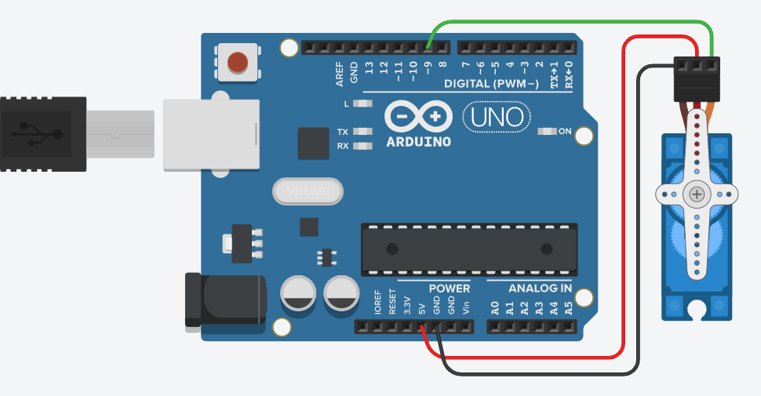
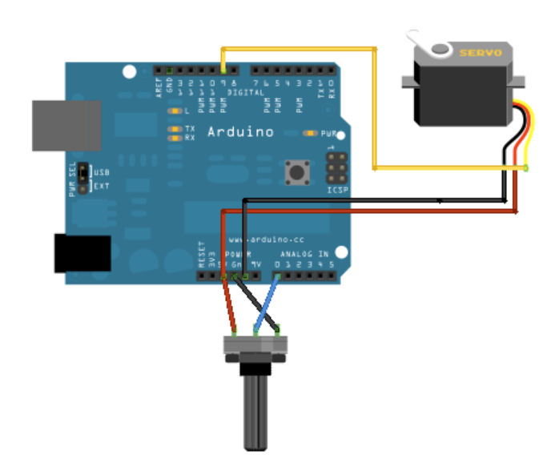
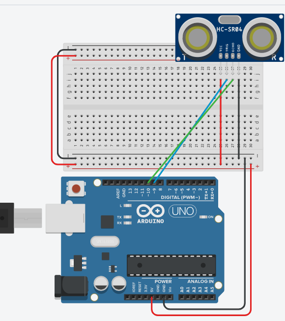
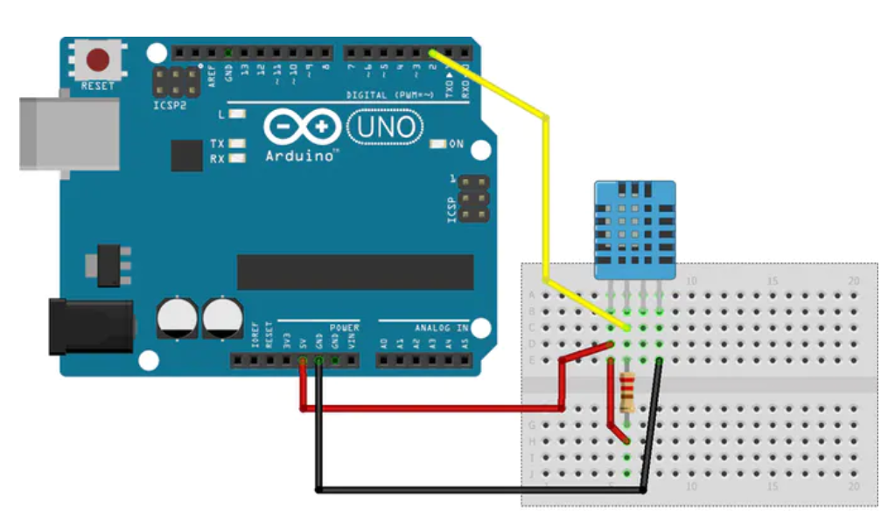
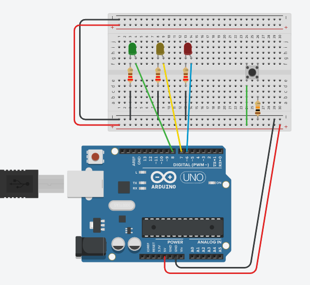
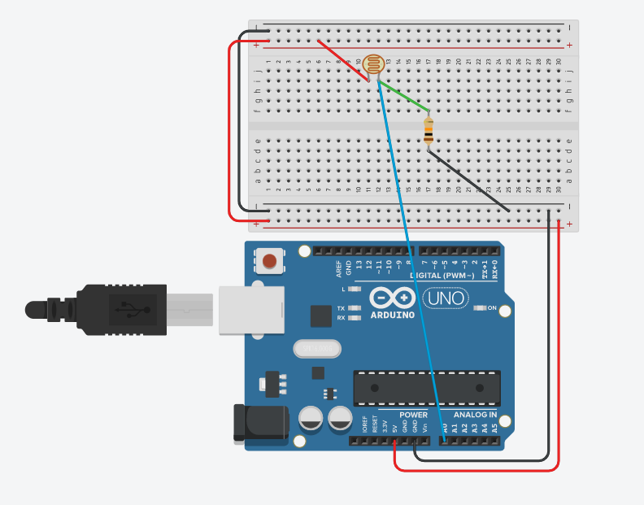

here you can see my progress of learning over the weeks
<----click here for web creation click here to see laser cutting---->
17 July 2020:
Todays lesson is about output devices, last time we learnt about input devices, now we learn about the devices that controls and moves things.
- What are output devices? Output devices are components that moves or controls movement.
- Output devices are often called actuators.
- We use output devices to display information or move mechanisms.
We use computer processors to control actuators so that we can obtain output (display, movement, motion) precisely. This is efficient and we can get a precise control over these devices.
We can also use computer processors to control the amount of energy supplied so we csn control speed or motion.
There are 3 types of output devices, they are:
- Displays:Things that shows a display, like LED displays,LCD displays, or any other light devices.
- Motors:There are different types of motors, such as,DC motors, that need speed control,servo motors and step up motors.
- Control of hight powered devices:Things like transistor drivers and relays.
Output devices are usually slower to react than the signals sent by the computer processor, so we would need to insert a delay for the reaction time.
These delays are usually too fast for us to be seen with our eyes, as our eyes only respond to anything slower than 1/30 second. Hence, we would see that the LED is always lit up, this is known as the Persistence of Vision.
There are 3 types of methods for controlling output devices.
- continuously send output information
- use a timer to send data, based on preset delay.
- asks or wait for a signal from the output device before sending new data.
Types of outputs:
- LEDS
- RGB LEDs
- 7 segment display
- LCD display
- neopixel LEDs
- OLED
- TFTP
- DC motors
- servo motors
- stepper motors
Assignments
For this we will be wiring up some output devices, I will be wiring up a servo motor and LCD display with I2C interface.
For the LCD display, it will be wired up as such:

For this we will need to download the LCD and the I2c module library, this is the link to download the libraries for the two of these---->LCD I2c
Once downloaded, we can open one of their examples for the LCD. We can open their hello world example and change somethings to make it say something else.
This is how the code looks like:

This is the demo of the circuit set up:
Now it is the servo motor, for the servo motor, we will be using the FS90 servo motor.
This is how the circuit looks like for the basic sweeping movement:
In arduino there are servo examples, and it has examples for one that you can control with a variable resistor or one that moves it automatically in a sweeping motion. We will do the sweeping first.
This is how the code looks like:

This is the demo of the circuit set up:
Now it is the second one, where you can use a variable resistor to control the angle you want the motor to stop at.
This will be wired as such:
For this there is also an example for it, it is named knob
This is how the code look like:

This is the demo of the circuit set up:
13 July 2020:
Today's lesson is about input devices, we learnt about the different other input devices and how to wire them to use.
- Firstly, what are input devices? Input devices are devices, modules, machines or subsystems that detects changes to the environment and send the information to other elctronics, usually a computer processor.
- input devices are usually called sensors
- sensor readings are analog by nature.
There are 3 methods of how sensors receive or read information, all these methods are based on the availabilty of the information. The 3 methods are:
- always available:These type of data are always available, all it needs to do is to just read it, changes to the reading occurs very slowly, these types of data are like temperature and such.
- polling:Processor has to keep on poll the sensor for information, the sensor will usually indicate whether there is new information through other signal or have a drastic change in the reading to indicate that there is new reading available. These are for devices like switches.
- triggering:Triggers are signals that are used to initiate the reading. Firstly, a processor sends a signal to the sensor for data, then the sensor gathers information and then when ready, it sends reading back to the Processor. The Sensor may also indicate that data is ready to be read by sending back an 'acknowledge/Ready' signal. These are for sensors like ultrsonic sensors.
Sensors usually read 2 types of signals, digital and analog.
- Analog signals are the most common type of singals, examples of analog signals include temperature, light, heat, etc
- The processor can only read digital signals, and for that we will need to use an analog/digital converter(ADC) to convert the analog reading to a digital value.
- For digital signals, these sensors are configured as smart devices, with processing power.
- The sensor itself converts the analog values into digital signal
- The processor then needs to decode to understand the value.
Types of input devices: switches, temperature and humidity sensors, ultrasonic sensor
switches:
- toggle switch
- pushbutton switch
- slide switch
- touch capacitive switch
Temperture sensor:
For this module we use DHT11 temperature and humidity sensor. Before using the sensor you will need to use the DHT11 library.
Ultrasonic sensor:
For ultrasonic sensor, it measures thorugh ultrasonic waves, where it produces a wave and receives an echo to detect the distance from the sensor to the closest thing.
Assignment
We are going to be wiring up some input devices, which are the ultrasonic sensor and the DHT11 temperature and humidity sensor.
For ultrasonic sensor, this is how the circuit is set up:
The code I am using is from How To Mechatronics website, I will put a link to direct to the website to show his teaching on how the sensor and the code---->ultrasonic sensor tutorial
This is a demo of the circuit set up:
For the temperature and humidity sensor, we are going to use a DHT11 sensor and will show how to set it up
For the DHT11, this is how the circuit is set up:
The code I am using is by Pi BOTs makerhub, where he has a tutorial on this sensor in the arduino project hub. This is the link to the website in the arduino project hub---->DHT11 temperature and humidity sensor tutorial
This is a demo of the circuit set up:
6 july 2020:
Today we learn about analog io and input devices.
Assignment
This is for pushbutton with multiple states to control 3 LEDS. For the pushbutton,
On the first state, all LEDs are off.
On the second state, the red LED turns on.
On the third state, the yellow LED turns on.
On the third state, the green LED turns on.
On the fourth state, all LEDs turn on.
On this next state, the LEDs turn off and the cycle restarts.
This is how the circuit will look like:
This is a video demo of the setup.
For the deivce we are going to use for analog input device, we are going to use the LDR, light dependent resistor.
This will be how the LDR will be set up:
The code that I will be as shown:

This is a video that I took after uploading the code onto my arduino board.
3 July 2020:
Today is about basic programming lessons, for programming, we will need to use programming language, since microprocessors cannot understand normal languages, and they can only understand to binary code. Because of this, it is a need to translate or convert english like instructions to machine code, done by a complier.
There are 2 different types of languages for programming:
high level languages are computer languuages that resemble english, which is easy for us to understand but needs to be converted into binary.
low level languages are computer languages that resemble computer like codes using mnemonics, they are very easy to convert to binary but it is extremely difficult to understand for us.
Computer programming languages try to achieve a middle-ground where it can be understood by humans, but easily and accurately convertable. Examples include:
- python: very simple and english like, but needs high processing power.
- c++: not very english like and pretty simple, but can be converted way easier.
errors in programming:
synthax error:when a line is not following the rules of programming, they are the easiest to spot and the most common error in programming.
logical errors:errors made by the programmer in developing the logic of the program, things like incrementing instead of decrementing values, or using the wrong measurements llike using imperial instead of metric. They are the hardest to catch and is only done by testing the code throughly.
semantic errors:improper use of program statements. Like using a loop that cannot be ended or using an incorrect function or statement. These are not easily identified and is extremely rare.
Structured programming
In programming, structured programming is useful in developing our pragrams as it can reduces the occurance of logical errors. It is a technique tha specifies the way/method of writing code, which is easy to understand and follow and produces good results. It allows us to control the flow of execution and it documents our code which allows us to make it easier to check and understand.
In arduino, there are 2 things that you will see, which is "void_setup()" and "void_loop()" these are for different things, first is the void setup, it is where you declare your variables, whether they be integers or pin number of the arduino or others, and void loop is where the coding for the functions work, the things in void loop will run and repeat forever, so you can think of some codes for the led to blink or do other things.
29 June 2020:
Today our class started on arduino microcontrollers, arduino is not something new to me as I have did a little bit of it in year 1 as part of my IE module, however I was not very good in it because I did not catch most of what my lecturer taught, but all I know is that it is something you can programe and control somethings, hopefully by the end of this topic I would be more experienced and have better understanding in using an arduino board.
So what is Arduino? Arduino is an open-source electronics platform based on easy-to-use hardware and software. Arduino boards are able to read inputs - light on a sensor, a finger on a button, or a Twitter message - and turn it into an output - activating a motor, turning on an LED, publishing something online. You can tell your board what to do by sending a set of instructions to the microcontroller on the board. To do so you use the Arduino programming language (based on Wiring), and the Arduino Software (IDE), based on Processing.
One website our lecturers introduced was thinkercad, in thinkercad, you can create 3d printing sketches and do simulations for electronics, you can also use it to test out arduino codes, just type in the arduino code or use blocks to do a command and you can test it, once the simulation is successful, you can copy the code you created with command blocks and wire up the arduino, and you can programme it.
22 June 2020:
Today our class started on introduction to electronics. Having basic knowledge of electrnics as it helps in preventing short circuits and overflowing of current so as to not damage our devices.
we would need to learn some definations first:
- current: the rate of charge passed per time, in seconds.
- voltage/potential difference: the energy needed to carry each charge between 2 points.
- resistance: Resistance is an electrical quantity that measures how the device or material reduces the electric current flow through it.
- The SI unit of voltage is V(voltage), current is A(ampree) and resistance is (ohms).
Formulas:
- current=charge(Q)/time(s)
- resistance=voltage(V)/current(A)
- calculating resisitance:
In series: R=R1+R2+.....
In parallel: 1/R=1/R1+1/R2+.... - All the resistance formulas are based on ohms law.
somethings to take note in circuits:
- Voltage on each branch in parallel circuits are equal
- voltage in series circuits are separated among each components running through.
- currrent in series circuits are equal among each components running through.
- current in parellel circuits are separated among each branch.
Kirchhoff's circuit laws:
- At any junction, or node, in an electrical circuit, the sum of the currents flowing into the node is the sum of the currents flowing out of a node.(curent/first law)
- When the direction is taken into account, the sum of the potential differenes in any closed circuit is zero.(loop/mesh/second law)
There are 2 different electrical currrents, alternating and direct current(AC and DC):
Alternating current is when the voltage goes from positive to negative, alternating in time intervals.
Direct current is when there is only one fixed voltage potential, which is either negative or positive.